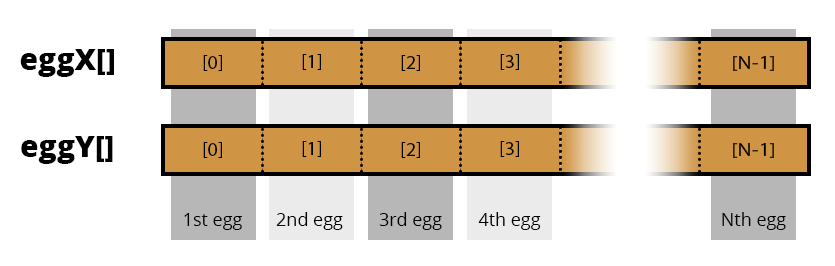

Les boucles For
Étape 4
Tout est dit dans le titre, nous allons découvrir comment utiliser les boucles 'For'
Il nous reste à programmer la "pluie" d'œufs et de carottes. Nous commencerons par les œufs. Du point de vue du joueur, on dirait qu'une infinité d'œufs tombent. Mais programmer une infinité d'objets, avec une quantité limitée de mémoire, ne va pas être possible malheureusement. Nous allons procéder plus simplement. Il y aura une dizaine d'œufs qui chuterons depuis une hauteur aléatoire. Une fois qu'un œuf atteint le bas de l'écran (ou s'il touche le panier), on le replace en haut. Ceci donnera l'illusion d'avoir une infinité d'œufs, et a pour seule limite d'avoir un maximum de 10 œufs sur l'écran à un moment donné.
Pour caractériser un œuf, nous avons besoins de quatre éléments: sa position horizontale, sa position verticale, sa largeur et sa hauteur. La hauteur et la largeur des œufs peuvent être mémorisé avec des constantes. La position, par contre, varie d'œuf en œuf. Il nous faudra donc des tableaux. Nous allons avoir deux tableaux, un pour les positions selon X, et un pour les positions selon Y.

Chaque indice correspond aux coordonnées d'un œuf. Donc le 3ème œuf a comme position (oeufsX[2], oeufsY[2]) (Petit rappel: les indices de tableaux commencent avec 0).
// Attrapoeuf.ino //
// ...
const int NBR_D_OEUFS = 10;
int oeufsX[NBR_D_OEUFS] = {};
int oeufsY[NBR_D_OEUFS] = {};
const int OEUF_LARGEUR = 2;
const int OEUF_HAUTEUR = 3;
void setup() {
gb.begin();
nourriture = 300;
// Placer les oeufs aléatoirement au dessus de l'écran
oeufsX[0] = random(0, gb.display.width()); // 1er oeuf
oeufsY[0] = random(-40, -OEUF_HAUTEUR);
oeufsX[1] = random(0, gb.display.width()); // 2eme oeuf
oeufsY[1] = random(-40, -OEUF_HAUTEUR);
oeufsX[2] = random(0, gb.display.width()); // 3eme oeuf
oeufsY[2] = random(-40, -OEUF_HAUTEUR);
oeufsX[3] = random(0, gb.display.width()); // 4eme oeuf
oeufsY[3] = random(-40, -OEUF_HAUTEUR);
oeufsX[4] = random(0, gb.display.width()); // 5eme oeuf
oeufsY[4] = random(-40, -OEUF_HAUTEUR);
oeufsX[5] = random(0, gb.display.width()); // 6eme oeuf
oeufsY[5] = random(-40, -OEUF_HAUTEUR);
oeufsX[6] = random(0, gb.display.width()); // 7eme oeuf
oeufsY[6] = random(-40, -OEUF_HAUTEUR);
oeufsX[7] = random(0, gb.display.width()); // 8eme oeuf
oeufsY[7] = random(-40, -OEUF_HAUTEUR);
oeufsX[8] = random(0, gb.display.width()); // 9eme oeuf
oeufsY[8] = random(-40, -OEUF_HAUTEUR);
oeufsX[9] = random(0, gb.display.width()); // 10eme oeuf
oeufsY[9] = random(-40, -OEUF_HAUTEUR);
}
void loop() {
// ...
}
Ici, je me suis arrêté à la fin de setup(), mais regardons ces lignes. Il y a juste les déclarations en début de programme, et une vingtaines de lignes pour placer les œufs aléatoirement au-dessus de l'écran avec random(-40, -OEUF_HAUTEUR);. En les plaçant avec une position Y négative, les œufs vont initialement être hors de l'écran, puis on les fera descendre dans la zone d'affichage.
Mais si on regarde la forme de ces lignes, on voit plusieurs lignes côtes à côtes qui se ressemble énormément. C'est exactement le type de code que j'ai dit que nous allions éviter au tout début de cette étape. Et c'est ici que je vous dévoile les boucles for.
Les boucles sont utilisées en programmation pour exécuter le même bloc de code plusieurs fois à la suite. Il existe trois types de boucles en C++:
- les boucles for (celle que nous étudierons ici)
- les boucles while
- les boucles do-while
for (initialisation; condition; incrémentation) {
// Code...
}
Les boucles for ont quatre parties. Dans initialisation on déclare une variable qui nous servira de compteur. Ensuite, on place une condition, le même style de condition qu'avec les if. L'incrémentation correspond à une instruction qui fait varier la valeur de notre compteur, généralement c'est compteur += 1. Et enfin, on place le code entre les accolades { }.
Ce sont bien des points-virgules ; entre l'initialisation, la condition et l'incrémentation.
Quand on entre dans la boucle, l'initialisation est exécutée. Ensuite, après avoir traversé le code entre accolades, l'incrémentation est exécutée, puis la condition est testée. Si elle est toujours vraie, on recommence du haut de la boucle. Prenons un exemple: la somme des nombres de 1 à 10:
int somme = 0;
for (int i = 0; i <= 10; i += 1) {
somme += i;
}
gb.display.print(somme);
*Si la condition n'est pas vraie *avant ** d'entrer dans la boucle, son code sera complètement sauté.
Lorsqu'on entre dans la boucle pour la première fois, on ajoute 1 à somme. i devient 2 et 2 est bien inférieur à 10, donc on ajoute 2 à notre somme, puis 3, etc... jusqu'à ce que i soit égal à 10. Là on ajoute 10 et puis on incrémente i. Donc i vaut maintenant 11, or 11 n'est pas inférieur ou égal à 10 donc on sort de la boucle et on affiche la somme! Tout ça en cinq lignes :)
Voici la boucle décomposée :
// itérateur de la boucle : i
// initialisation de l'itérateur avec la valeur 1
// |
// | condition de poursuite de la boucle (tant que i<=10)
// | |
// | | à chaque itération de la boucle on ajoute 1 à i
// | | UNE FOIS QUE LE CODE SITUÉ ENTRE LES ACCOLADES DE
// | | LA BOUCLE A ÉTÉ EXÉCUTÉ
// | | |
// | | |
// v v v
for (int i = 0; i <= 10; i += 1) {
// tout ce qui se trouve ici
// sera exécuté à chaque itération de la boucle
}
somme = 0
itération | i | somme | puis i prend la valeur
----------+----|--------------|------------------------
#1 | 1 | 0 + 1 = 1 | 2
#2 | 2 | 1 + 2 = 3 | 3
#3 | 3 | 3 + 3 = 6 | 4
#4 | 4 | 6 + 4 = 10 | 5
#5 | 5 | 10 + 5 = 15 | 6
#6 | 6 | 15 + 6 = 21 | 7
#7 | 7 | 21 + 7 = 28 | 8
#8 | 8 | 28 + 8 = 36 | 9
#9 | 9 | 36 + 9 = 45 | 10
#10 | 10 | 45 + 10 = 55 | 11 <-- la condition n'est plus
respectée donc la boucle s'arrête
En incrémentant une variable, on peut parcourir tous les éléments d'un tableau. C'est ici que les tableaux montrent leur plus grande utilité. Prenons directement notre code dans setup() et réécrivons-le avec une boucle :D
// Attrapoeuf.ino //
// ...
void setup() {
gb.begin();
nourriture = 300;
// Placer les oeufs aléatoirement au dessus de l'écran
for (int i = 0; i < NBR_D_OEUFS; i += 1) {
oeufsX[i] = random(0, gb.display.width());
oeufsY[i] = random(-40, -OEUF_HAUTEUR); // Au dessus de l'écran
}
}
//...
Bien plus simple non ? Avoir structuré notre code avec des tableaux et des boucles for nous permet de faire quelque chose de génial. Vous voulez 20 œufs sur l'écran ? const int NBR_OEUF = 20; Vous en voulez encore plus peut-être? const int NBR_OEUF = 500;. Vous n'avez plus qu'à changer une seule ligne de code si vous voulez changer la quantité d'œufs !
// miseAJour.ino //
void miseAJour() {
// Mise a jour de la nourriture et de la taille //
// Vérifier que le panier ne sois pas vide //
// Oeufs
for (int i = 0; i < NBR_D_OEUFS; i += 1) {
oeufsY[i] += 1; // Déplacer l'oeuf vers le bas
// Collision avec le panier
if (gb.collide.rectRect(panierX, PANIER_Y, panierLargeur, PANIER_HAUTEUR,
oeufsX[i], oeufsY[i], OEUF_LARGEUR, OEUF_HAUTEUR)) {
score += 1;
if (score > highscore) {
highscore = score;
}
nourriture = nourriture + 20; // MMmmmmm des oeufs
// Reset l'oeuf
oeufsX[i] = random(0, gb.display.width());
oeufsY[i] = random(-40, -OEUF_HAUTEUR); // Au dessus de l'écran
}
// Sortie de l'écran
if (oeufsY[i] >= gb.display.height()) {
// Reset l'oeuf
oeufsX[i] = random(0, gb.display.width());
oeufsY[i] = random(-40, -OEUF_HAUTEUR); // Au dessus de l'écran
}
}
}
Ici j'ai ajouté la logique de jeu. On a une boucle qui, pour chaque œuf, regarde s'il est entré en collision avec le panier, puis s'il est sorti de l'écran. Précédemment, pour évaluer une collision, nous avons calculé par nous-mêmes à l'aide d'un schéma, notamment lors du Pong. Mais ce que vous ne saviez pas, c'est qu'il existe une fonction toute prête qui le fait pour vous :D
gb.collision.rectRect(rect1X, rect1Y, rect1Largeur, rect1Hauteur, rect2X, rect2Y, rect2Largeur, rect2Hauteur)
On passe les positions et dimensions des deux rectangles, et la fonction retourne vrai s'ils se chevauchent.
// affichage.ino //
void affichage() {
// Afficher le panier //
// Oeufs
gb.display.setColor(BROWN);
for (int i = 0; i < NBR_D_OEUFS; i += 1) {
gb.display.fillRect(oeufsX[i], oeufsY[i], OEUF_LARGEUR, OEUF_HAUTEUR);
}
// Afficher le score et highscore //
}
Ici, on utilise une boucle pour afficher tous les œufs.